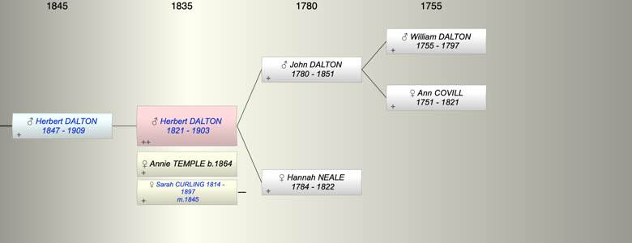

| [Index] |
| Herbert DALTON (1821 - 1903) |
|  |
| b. 1821 |
| +. (1) Annie Caroline TEMPLE (1864 - ) |
| m. (2) 28 Apr 1845 Sarah CURLING (1814 - 1897) at Clerkenwell |
| d. 06 Dec 1903 at Tunbridge Wells aged 82 |
| Parents: |
| John DALTON (1780 - 1851) |
| Hannah Mary NEALE (1784 - 1822) |
| Children (1): |
| Herbert William DALTON (1847 - 1909) |
| Grandchildren (1): |
| Joseph DALTON |
| Events in Herbert DALTON (1821 - 1903)'s life | |||||
| Date | Age | Event | Place | Notes | Src |
| 1821 | Herbert DALTON was born | ||||
| 1822 | 1 | Death of mother Hannah Mary NEALE (aged 38) | |||
| 28 Apr 1845 | 24 | Married Sarah CURLING (aged 30) | Clerkenwell | ex FMP no details | |
| 17 Jun 1847 | 26 | Birth of son Herbert William DALTON | Lambeth | Note 1 | |
| 1851 | 30 | Death of father John DALTON (aged 71) | |||
| 1897 | 76 | Death of wife Sarah CURLING (aged 83) | Tunbridge Wells | Note 2 | |
| 06 Dec 1903 | 82 | Herbert DALTON died | Tunbridge Wells | Note 3 | |
| Personal Notes: |
| By 1901 census he had remarried |
| Created on a Mac™ using iFamily for Mac™ on 8 Oct 2023 |